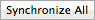
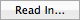
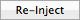

The Bundles/Files area indicates all the resources of your application that you want localized. You can add and remove files and folders using the + and - buttons below the files list. The columns Status and Keys show changes to the file content and the number of strings respectively.
 The Bundle Control Bar contains important
commands to manage the files contained in the original bundle.
The Bundle Control Bar contains important
commands to manage the files contained in the original bundle.
 Shows further information on the file selected in the Files list.
Shows further information on the file selected in the Files list.
 Shows the strings and string information for the file selected in the Files list.
Shows the strings and string information for the file selected in the Files list.
Shows a preview of the original interface file to provide an overview for localization.
 Updates the files in the Files list to the latest versions in the resources folder.
Updates the files in the Files list to the latest versions in the resources folder.
Applies the settings of the original files to the selected files in all target languages.
Updates/creates the localized .lproj folders with selected files in all target languages.
 The Languages List contains all languages you want the application to be localized into.
The languages shown in this list comprise the source language (language the app was developed in) and all target languages added. You can add/remove target languages
by using the + and - buttons below the Languages list.
The Languages List contains all languages you want the application to be localized into.
The languages shown in this list comprise the source language (language the app was developed in) and all target languages added. You can add/remove target languages
by using the + and - buttons below the Languages list.
 The Localization Control Bar contains important commands to manage the localization
of the resources files into the target languages.
The Localization Control Bar contains important commands to manage the localization
of the resources files into the target languages.
 Creates the Localizer files for the target languages.
Creates the Localizer files for the target languages.
 Opens the Options window for embedding dictionaries in Localizer files.
Opens the Options window for embedding dictionaries in Localizer files.
Imports translated Localizer files into the Localization Manager Project.
Opens the Localizer file for the language selected in the Languages list.
 Updates the localized .lproj folders with all files for the language selected in the Languages list.
Updates the localized .lproj folders with all files for the language selected in the Languages list.
Applies the settings of the original files to all files in the target language(s) selected in the Languages list.